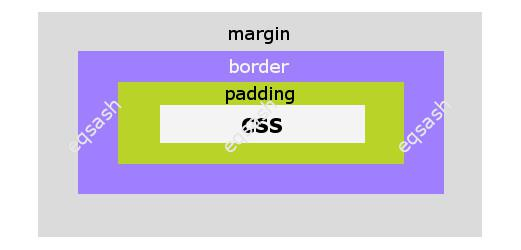
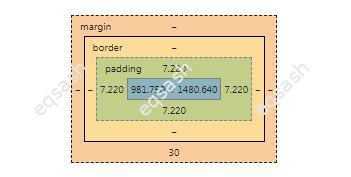

Як зробити відступ навколо елемента, різниця між margin та padding, тег br

При верстці сторінок сайту, елементи розміщуються у певному порядку і робляться відступи - як вертикальні так і горизонтальні. Відступи можна зробити різними способами, що найчастіше використовуються CSS властивості margin і padding. Яка різниця між цими властивостями? Відповідь буде дано нижче.
Крім вищезгаданих властивостей CSS, відступи можна робити іншими способами, все залежить від обраного позиціонування. Наприклад, при абсолютному позиціонуванні можна використовувати властивості top, right, bottom, left. При звичайному позиціонуванні елементів застосовуються властивості margin і padding.
Властивості margin:
- margin-top,
- margin-right,
- margin-bottom,
- margin-left.
Властивості padding:
- padding-top,
- padding-right,
- padding-bottom,
- padding-left.
Як видно вище, margin и padding – це просто скорочені назви властивостей, можна відразу вказати в таких властивостях всі значення відступів через кому для кожної сторони, а не писати окремо. Наприклад, подивіться на записи нижче – перший запис детальний, другий запис скорочений. Яку використовувати, вирішувати розробнику.
Яка різниця між margin и padding? Властивість margin служить для створення зовнішнього відступу, тобто відступи будуть робитись від елемента. А властивість padding створює внутрішні відступи, тобто вміст елемента буде віддалено від внутрішніх кордонів на визначені значення.
Часто можна побачити, що для вертикальних відступів використовується тег br. Це помилка, оскільки цей тег призначений для перенесення рядків тексту, а не для верстки сторінок сайту. Замість цього тега слід прописати стилі для потрібного елемента і задати властивість margin-top або margin-bottom – в результаті будуть зроблені необхідні відступи від елемента.
У консолі браузера можна наочно побачити, які відступи задані для конкретного елемента. Для цього необхідно вибрати елемент і в колонці консолі, де перелічені CSS властивості елемента, потягнути вниз - зазвичай там є зображення з відступами навколо елемента. Там можна побачити всі відступи, включаючи відступи, створені властивістю border.

Таким чином, важливо правильно використовувати властивості CSS для задання відступів навколо елемента. Для спрощення процесу розробки можна користуватися спеціальними додатками, які покажуть значення всіх відступів.